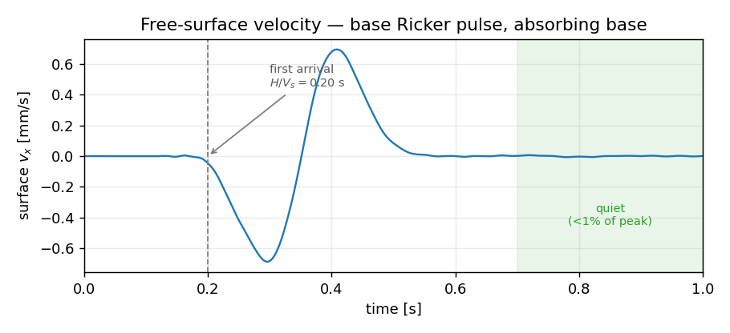

Plane-wave SSI — an absorbing soil column¶
Every soil-structure-interaction model has the same problem: the soil extends to infinity, but your mesh can't. Chop it off with a fixed boundary and outgoing waves bounce straight back in, contaminating the response with reflections that aren't real. The fix is an absorbing boundary — a truncation that lets waves leave and never return, so a finite box behaves like the half-space it's cut from.
This example builds the smallest model that exercises the whole
machinery: a one-dimensional soil column shaken from below by a single
shear pulse. It's the apeGmsh capstone for ADR 0054 — the three pieces
that ship the ASDAbsorbingBoundary3D element, used together:
g.parts.add_plane_wave_boxbuilds the soil box and wraps it in a one-element-thick absorbing skin on its five truncation faces, tagging each skin cell with its boundary type (btype).ops.element.absorbing_boundaryfans the skin out into oneASDAbsorbingBoundary3Dper cell and attaches the base input — the incident wave is injected as a velocity on the bottom faces.s.activate_absorbingflips the boundary from its gravity-stage hold into absorbing mode for the transient.
The known answer is physics, in two parts. The pulse should reach the free surface one shear-wave traveltime $H/V_s$ after it leaves the base, and once it has passed through, the column should go quiet — the energy radiates out the bottom instead of reverberating.
The problem¶
free surface (z = 0) ← we record v_x here
┌───────────────────────┐ ─┐
│ │ │
│ soil column │ │ H = 40 m
│ V_s = 200 m/s │ │ ρ = 2000 kg/m³, ν = 0.3
│ (linear elastic) │ │
│ │ │
└───────────────────────┘ ─┘
▲▲▲▲▲▲▲▲▲▲▲▲▲▲▲▲▲▲▲▲▲▲▲▲▲ absorbing base
base shear-velocity pulse:
Ricker, f_n = 4 Hz, in +x
The soil's shear-wave speed follows from its stiffness and density, $V_s=\sqrt{G/\rho}$. We pick the numbers backwards from a clean $V_s=200\ \text{m/s}$:
$$ G = \rho V_s^2 = 8.0\times10^{7}\ \text{Pa},\qquad E = 2G(1+\nu) = 2.08\times10^{8}\ \text{Pa}. $$
The column is $H=40\ \text{m}$ deep, so a wave leaving the base reaches the surface after
$$ \frac{H}{V_s} = \frac{40}{200} = 0.20\ \text{s}. $$
That's the first thing we'll check. The second is radiation: after the pulse has come and gone, the surface velocity should collapse to a tiny fraction of its peak, because a quiet base doesn't reflect it back.
Units
Consistent SI throughout — metres, newtons, pascals, kilograms, seconds. Velocities come out in m/s.
The whole model¶
The whole script, top to bottom. It's a apeGmsh build, the typed
bridge, and a two-verb staged analysis — flip, then run.
import os
import numpy as np
from apeGmsh import apeGmsh
from apeGmsh.opensees import apeSees
from apeGmsh.opensees.material.nd import ElasticIsotropic
from apeGmsh.opensees.time_series.time_series import Ricker
# --- Problem data (consistent SI: m, N, Pa, kg, s) ---
rho, nu, Vs = 2000.0, 0.3, 200.0 # density, Poisson, target shear-wave speed
G = rho * Vs**2 # 8.0e7 Pa
E = 2.0 * G * (1.0 + nu) # 2.08e8 Pa
H = 40.0 # soil column depth [m]
traveltime = H / Vs # 0.20 s
# --- Base shear-velocity pulse (Ricker wavelet, +x) ---
f_n, t_center, dt, t_total = 4.0, 0.15, 0.002, 1.0
n_steps = round(t_total / dt)
surf = "surf_vel.out"
# --- 1. Geometry: soil box + absorbing skin in one call ---
with apeGmsh(model_name="pwbox_ssi") as g:
res = g.parts.add_plane_wave_box(
x=(20.0, 2), # lateral (size, n) — coarse: the wave is vertical
y=(20.0, 2),
z=(H, 16), # depth 40 m in 2.5 m elements
)
g.mesh.generation.generate(dim=3)
fem = g.mesh.queries.get_fem_data()
# --- 2. Bridge: soil brick + the absorbing skin ---
ops = apeSees(fem)
ops.model(ndm=3, ndf=3)
soil = ops.register(ElasticIsotropic(E=E, nu=nu, rho=rho))
base = ops.register(Ricker(f_n=f_n, t_total=t_total, dt=dt,
t_center=t_center, kind="velocity", factor=0.01))
ops.element.stdBrick(pg=res.soil_pg, material=soil) # the soil
ops.element.absorbing_boundary( # the skin
skin=res, material=soil,
base_series=base, base_dirs=("x",), # inject v_x at the base
)
# --- 3. Staged dynamic analysis: flip the boundary, then run ---
with ops.stage(name="dynamic") as s:
s.activate_absorbing(pg=res.skin_all_pg) # hold -> absorbing
s.recorder(ops.recorder.Node(
file=surf, response="vel",
pg=res.free_surface_pg, dofs=(1,), time_format="dt",
))
s.analysis(
test=ops.test.NormDispIncr(tol=1e-8, max_iter=20),
algorithm=ops.algorithm.Newton(),
integrator=ops.integrator.Newmark(gamma=0.5, beta=0.25),
constraints=ops.constraints.Transformation(),
numberer=ops.numberer.RCM(),
system=ops.system.UmfPack(),
analysis=ops.analysis.Transient(),
)
s.run(n_increments=n_steps, dt=dt)
ops.py("ssi.py", run=True) # emit the openseespy deck and run it
# --- 4. Read the surface velocity, run the two checks ---
data = np.loadtxt(surf)
t = data[:, 0]
v = data[:, 1:].mean(axis=1) # x-velocity, averaged over the surface
absv = np.abs(v)
peak = absv.max()
t_arr = t[int(np.argmax(absv > 0.05 * peak))] # first 5%-of-peak crossing
late = float(absv[t >= 0.7].max()) # after the pulse has passed
print(f"H/Vs = {traveltime:.3f} s")
print(f"first arrival = {t_arr:.3f} s")
print(f"peak |v| = {peak:.3e} m/s")
print(f"late max (>0.7) = {late:.3e} m/s ({late/peak:.2%} of peak)")
Run it. You should see (after the mesh and OpenSees banners):
H/Vs = 0.200 s
first arrival = 0.198 s
peak |v| = 6.949e-04 m/s
late max (>0.7) = 6.488e-06 m/s (0.93% of peak)

Both checks land. The wave arrives at 0.198 s, matching $H/V_s=0.20$ to 1 %. And after the pulse passes, the surface settles to under 1 % of its peak — the energy left through the base. Hold a fixed base under the same column and you'd see the opposite: the pulse reflects, comes back up, and the surface rings on for cycle after cycle.
Step 1 — One call builds the soil and its absorbing skin¶
This is the turnkey entry point. Each axis is (size, n_elements), and
the box is centred with its top face at $z=0$ (the free surface). What
makes it more than add_box is the skin: a one-element-thick shell
wrapped around the five truncation faces — the four sides and the bottom,
never the free-surface top.
That skin isn't decorative. The absorbing element is a surrogate for the half-space outside the box, with zero gravity mass in its hold state — so it has to be genuinely extra material outside an intact soil box, not a reinterpreted outer ring (reinterpreting would corrupt the in-situ stress; see ADR 0054). The builder lays it down as extra structured grid cells, so the soil box stays whole and the skin shares its nodes by construction.
The res it returns is an AbsorbingSkinResult — a bag of physical-
group names so you never touch a raw tag:
| field | what it names |
|---|---|
res.soil_pg |
the intact interior soil |
res.skin_pgs |
btype -> PG for every skin cell type ("L", "LF", "BLF", …) |
res.skin_all_pg |
roll-up over the whole skin (the flip / Rayleigh target) |
res.bottom_pgs |
the B-containing PGs — where base input goes |
res.free_surface_pg |
the soil top face (z=0) — where we record |
Each skin cell's btype is the set of faces it lies outside of, OR-
combined: L/R for the $\pm x$ faces, F/K for $\pm y$, B for the
bottom. A side panel is one letter (L), a vertical edge two (LF), a
bottom corner three (BLF). For this 2×2×16 box that's 64 soil bricks
wrapped by 208 skin cells.
Step 2 — Fan the skin into elements, attach the input¶
soil = ops.register(ElasticIsotropic(E=E, nu=nu, rho=rho))
base = ops.register(Ricker(f_n=f_n, t_total=t_total, dt=dt,
t_center=t_center, kind="velocity", factor=0.01))
ops.element.stdBrick(pg=res.soil_pg, material=soil)
ops.element.absorbing_boundary(
skin=res, material=soil, base_series=base, base_dirs=("x",),
)
The soil is an ordinary stdBrick over res.soil_pg. The skin is one
call: absorbing_boundary walks res.skin_pgs and emits one
ASDAbsorbingBoundary3D per cell with that cell's fixed btype.
Two subtleties worth knowing:
- The skin reads the soil material, it doesn't depend on it. The
element wants raw $G$, $\nu$, $\rho$ doubles, not a material tag — so
material=soilis consumed to derive $G=E/2(1+\nu)$ at the call site, and only the soil's ownnDMaterialis emitted (you'll find exactly one in the deck). The skin carries floats. - The base input rides the bottom only.
base_seriesis attached as a velocity (-fx, sincebase_dirs=("x",)) to theB-containing cells and nowhere else — that's the incident wave entering from below. Because it's a velocity input, the wavelet iskind="velocity".
A Ricker wavelet is the standard single-pulse source: a clean,
band-limited bump centred at t_center. It expands to a tabulated
timeSeries Path at emit time — nothing exotic reaches OpenSees.
Step 3 — Flip, then run¶
with ops.stage(name="dynamic") as s:
s.activate_absorbing(pg=res.skin_all_pg)
...
s.run(n_increments=n_steps, dt=dt)
The absorbing element has two lives. In its hold state (stage 0) it
acts like a fixed support — that's what holds the box still while gravity
settles in (not exercised here, but it's why the skin is extra
material). In its absorbing state (stage 1) the dashpots switch on
and it radiates. s.activate_absorbing(pg=res.skin_all_pg) emits the
one-way switch — the OpenSees parameter / addToParameter … stage /
updateParameter sequence — once, before the transient analyze
loop, over every skin element.
Everything else is a standard implicit transient: Newmark,
Transformation constraints (the absorbing boundary imposes multi-point
constraints, so Plain won't do), and a recorder Node capturing the
free-surface $v_x$ with time_format="dt" so the output carries a time
column.
Staged decks emit text, then run
A staged model can't be driven live in-process — ops.analyze()
refuses it. Instead ops.py("ssi.py", run=True) writes the complete
openseespy deck (both the flip and the analyze loop are baked in)
and runs it in a subprocess. ops.tcl(..., run=True) does the same
for Tcl.
What the two numbers mean¶
Arrival ≈ $H/V_s$. The leading edge of the surface motion shows up at 0.198 s, one shear-wave traveltime after the pulse departs the base. The peak comes a little later (~0.41 s) because the free surface doubles the incident wave and the wavelet has finite width — but first motion is governed cleanly by the wave speed you put in.
Late/peak < 1 %. This is the whole point of the boundary. The pulse reaches the surface, reflects off it (a free surface does reflect), travels back down — and is absorbed at the base instead of bouncing back up. So there's no second arrival, and the surface goes quiet. The green band in the figure ($t>0.7\ \text{s}$) holds at 0.93 % of peak. A fixed base would trap the energy and the column would ring indefinitely.
Where to go from here¶
This is the pure-wave skeleton. Two natural extensions, both already supported:
- In-situ stress first. Real SSI runs a gravity stage before the
transient, with the boundary holding the box, then establishes the
geostatic state with
s.initial_stress(...)before the flip. The skin is built to survive that hold — that's why it's extra material. - A structure on top. The
waveletExamplethis is modelled on is a bare soil column, butres.free_surface_pgis exactly where you'd embed or tie a foundation and let the radiated motion drive it. - A layered site. Pass a top → bottom list of layers
(
z=[(15, 3), (25, 5)]) and the soil and the lateral skin split per layer. Emit onestdBrickperres.soil_pgs[k]with that layer's material, and give the skin the matching impedances withops.element.absorbing_boundary(skin=res, materials=[m0, m1, …])— one per layer, top → bottom. The lateral boundary then carries the correctVsat every depth instead of a single uniform value.